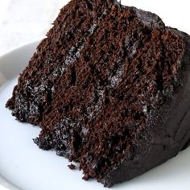
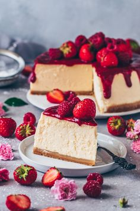
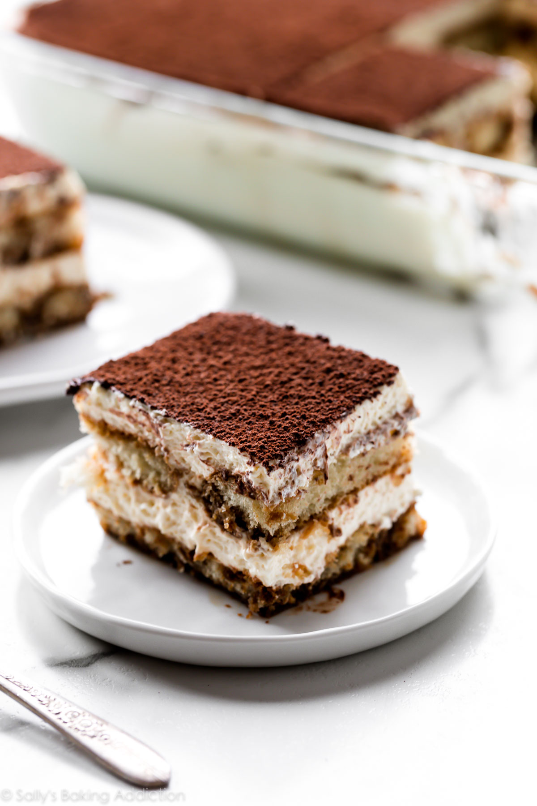
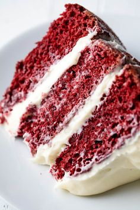

About:
Chocolate is often the base cake for many other chocolate cakes.
It is a common sponge cake with cocoa powder added to it while whisking
the ingredients together. Ganache, fudge, sweeteners,and vanilla creme
are often used in between two layers as icing.
Recipe: Chocolate Cake

About:
Cheesecake has a base made from crushed cookies, which is then
topped with thick luscious soft cheese, eggs, and sugar.
Recipe: Cheesecake

About:
Carrot cake is cake that contains carrots mixed into the batter.
Most modern carrot cake recipes have a white cream cheese frosting.
Recipe: Carrot cake

About:
Tiramisu is a coffee-flavoured Italian dessert. It is made of
ladyfingers dipped in coffee, layered with a whipped mixture of eggs,
sugar and mascarpone cheese, flavoured with cocoa. The recipe has been
adapted into many varieties of cakes and other desserts.
Recipe: Tiramisu cake

About:
The red velvet cake is a simple sponge cake infused with beet
root juice and cocoa powder, but nowadays, food color is used instead
of beet root, which gives it its distinct maroon color.
The cake is topped with a thick white frosting
Recipe: Red velvet cake